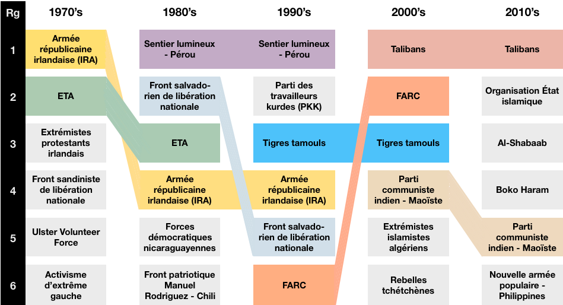

Le 11 septembre 2001, l'opinion publique mondiale a été sidérée devant les vidéos des deux Boeings d'American et United Airlines se crachant dans les tours jumelles du World Trade Center, à New York. À l'occasion, les pays occidentaux se sont rappelés qu'ils pouvaient eux aussi être le théâtre d'attentats de grande ampleur, et que des centaines — voire des milliers — de leurs citoyens pouvaient y laisser leur vie. La vague d'attentats qui a touché l'Europe de l'Ouest à partir de l'année 2015 a renforcé cette peur, et avec elle les sentiments xénophobes, notamment envers les individus supposément identifiés comme musulmans. Elle a aussi conduit les gouvernements à mettre en place des lois permettant un contrôle accru des libertés publiques dans l'objectif proclamé est de protéger les citoyens des menaces terroristes.
Dans le même temps, ces événements ont fait l'objet d'une large couverture médiatique à bases de longues éditions spéciales en continu, alors que les attentats perpétrés hors d'Europe et de l'Amérique du Nord ont été le plus souvent relégués comme brèves et entrefilets, lorsqu'ils n'ont pas été purement et simplement passés sous silence. Ce traitement différencié a pu laisser penser aux opinions occidentales que les attentats étaient devenus une réalité endémique de l'Europe de l'Ouest et de l'Amérique du Nord au cours des deux dernières décennies, et qu'ils constituaient plus qu'un phénomène marginal dans le reste du monde.
Qu'en est-il réellement ? Les attentats terroristes sont-ils vraiment devenus une réalité essentiellement ouest-européenne et nord-américaine depuis 2001 ?
L'ensemble des résultats présentés sur cette page ont été obtenus à partir de la Global Terrorism Database (GTD), une base de données libre de droits qui recense les attentas terroristes entre 1970 et 2016 de manière systématique. Elle est constituée, mise à jour et mise à disposition du public par le Consortium national pour l'étude du terrorisme et des réponses face au terrorisme (START), un centre d'excellence du ministère de la sécurité intérieur états-unien hébergé par l'université du Maryland.
Sont considérés comme des actes terroristes les faits d'usage et de menace d'usage illégal de la force et de la violence par des acteurs non-étatiques dans un but politique, économique, religieux ou social en mobilisant la peur, la coercition ou l'intimidation.
Après avoir été un phénomène marginal jusqu'au milieu des années 1970 (quasiment aucun événement), les attentats terroristes prennent davantage d'importance, puisque qu'entre 2 000 et 5 000 attentats ont lieu chaque années [courbe bleue]. Ce nombre reste cependant relativement stable au cours du temps. À partir du milieu des années 2000, le phénomène s'intensifie davantage et suit une dynamique de hausse soutenue, jusqu'à dépasser les 16 000 événements en 2014.
L'évolution du nombre de victimes suit globalement les mêmes tendances [courbe noire]. L'augmentation du nombre de victimes à partir de 2010 est cependant bien plus marquée que pour le nombre d'attentas, puisqu'on passe d'un peu plus de 8 000 victimes à plus de 43 000 en l'espace de trois ans.
En fait, deux pays contribuent tout particulièrement à cette intensification de l'activité terroriste sur la dernière décennies : l'Irak et l'Afghanistan. Lorsque l'on omet les événements de ces deux pays [courbes verte et orange], les augmentations — toujours bien visibles — sont sensiblement plus modérées.
Ces évolutions globales ne disent rien de la répartition géographique des attentats terroristes et de leurs victimes. Pourtant, les différentes parties du monde ne sont pas toutes logées à la même enseigne…
L'intensité de la survenue d'attentats se répartit inégalement sur l'ensemble de la planète. En Océanie par exemple, il s'agit d'un phénomène presque inexistant.
En Europe, le Royaume-Uni, l'Espagne et la France ont tous trois connu plus d'attentats que l'Allemagne, pourtant plus peuplée. Cet écart s'explique essentiellement par les activités de l'IRA, de l'ETA et des nationalistes corses en début de période. La Russie et les États-Unis ont connu un nombre d'attentats du même ordre de grandeur que la France. Les pays les plus touchés ont été l'Inde, le Pakistan, ainsi que l'Irak et l'Afghanistan, moins peuplés, avec plus de 10 000 évènements en moins de 50 ans pour chacun de ces pays.
Les pays d'Amérique Centrale et du Sud ont également été fortement impactés, en particulier le Salvador, le Pérou et le Chili. En Afrique, c'est essentiellement aux extrémités du continent que les attentats sont survenus : au Maghreb, au Nigéria (pays le plus peuplé), en Somalie et en Afrique du Sud. Enfin, en Asie orientale, il y a surtout eu des attentats en Thaïlande et aux Philippines. La Chine ou le Japon, par exemple, n'ont connu ce phénomène qu'à la marge.
Cet état des lieux statique ne dit rien de la façon dont ces évènements ont évolué. Qu'en est-il si on prend en considération le temps ? ...
L'Afrique, le Moyen Orient et l'Asie du Sud concentrent les victimes des dernières décennies
Il est frappant d'observer à quel point la géographie du terrorisme évolue au cours du temps : les régions les plus touchées hier ne sont pas celles qui sont le plus touchées aujourd'hui. Autrement dit, il n'y a pas de terres marquées par essence par le fait terroriste. Dans les années 1970, c'est l'Europe qui concentre l'essentiel des victimes d'attentats. Dans les années 1980, le centre de gravité se déplace en Amérique du Sud. À partir des années 1990, les victimes sont pour la plupart à déplorer en Asie du Sud, et surtout en Afrique et au Moyen Orient. Après 2005, en particulier, la quasi totalité des victimes de terrorisme sont issues de ces zones (plus de 98% en 2016). Tout au long de la période, l'Amérique du Nord apparaît comme étant relativement épargnée. La seule exception véritable est 2001 [gros losange gris, sur le graphique], année au cours de laquelle quasiment 40% des victimes du terrorisme dans le monde sont à déplorer dans cette région.
S'il est vrai que l'Europe a bien été le foyer des attaques terroristes au début de la période, depuis les années 1980, l'écrasante majorité des victimes est à déplorer dans d'autres régions du monde que les pays occidentaux. Contrairement au sens commun, l'Europe et l'Amérique du Nord ne sont pas devenus récemment les centres du terrorisme mondial mais ont au contraire perdu ce statut, transféré à l'Asie du Sud et surtout à l'Afrique et au Moyen Orient.
Mais peut-être que les attentats qui ont lieu en Europe et en Amérique du Nord, s'ils sont moins nombreux et font donc au total moins de victimes, sont individuellement plus meurtrier. Si chaque attentat fait beaucoup de morts, alors chacun marque davantage les esprits que des attentats de plus faible ampleur. Mais est-ce effectivement le cas ?
…mais pas en Europe
On observe une tendance claire à la hausse du nombre de victimes par attentat. En 1970, seul une attaque sur 5 fait une victime, alors qu'en 2016, chaque attentat fait en moyenne entre 2 et 3 victimes.
Les attentats terroristes sont donc de plus en plus meurtriers. Mais cette évolution est-elle identique dans toutes les régions du monde ?
A priori, il est difficile d'observer des différences entre régions. C'est essentiellement le fait de l'attentat du 11 septembre 2001, à New York, de loin le plus meurtrier de l'histoire, avec plus de 3 000 morts. Impressionnant, sidérant, il fait augmenter la moyenne de l'Amérique du Nord en 2001 de manière très importante, et on comprend qu'il ait tant marqué les esprits.
Mais que se passe-t-il si, pour observer les autres évolutions, on ne prend pas en compte l'Amérique du Nord ? (On a aussi omis le groupe des « Autres régions ».)
Même si elle connaît quelques perturbations, la tendance européenne est à la stabilité, voire à une légère décroissance. En 1970, chaque attentat tue en moyenne 2.3 personnes, contre seulement 0.8 en 2016. Au contraire, les attentats commis en Afrique et au Moyen Orient sont clairement de plus en plus meurtrier. Faisant rarement plus de 3 victimes avant le milieu des années 1980, voire quasiment aucune dans les années 1970, chaque attentat commis dans cette région du monde fait désormais plus de 3.5 victimes.
Que les attentats terroristes deviennent globalement de plus en plus meurtrier est-il lié au mode d'action que choisissent les terroristes ?
Des modes d'action stables dans le temps
La structure des attaques terroristes en fonction du type d'attaque ne change pas fondamentalement au cours du temps depuis 1970. Les attaques à l'explosif — peut-être plus impressionnants pour le spectateur — tendent à se généraliser (50% des attentats), notamment aux dépens des assassinats, mais ils ont toujours représentés plus du tiers des attaques. Les assauts armés, caractéristiques des attentats les plus récents (et médiatisés) en France, n'ont pas connu d'augmentation particulière au cours des dernières décennies.
Les modes d'action des groupes terroristes restent donc relativement inchangés au cours de la période, mais les organisations terroristes elles-mêmes changent-elles de nature ?
Des centaines d'organisations terroristes sont actives durant période qui nous intéresse, c'est pourquoi on ne s'intéresse qu'aux organisations les plus actives, c'est-à-dire celles qui commettent le plus d'attentats au cours d'une décennie.
Trois éléments sont frappants: